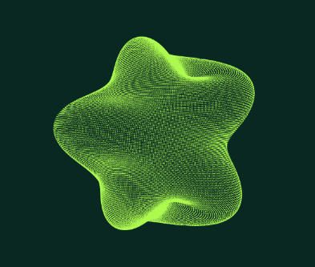
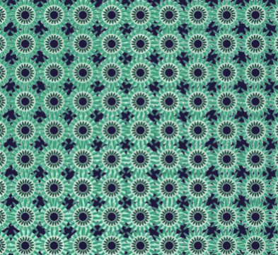
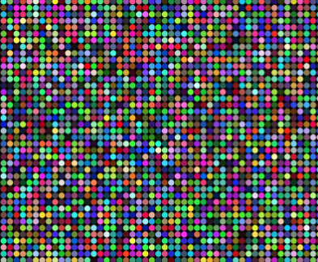

Gestaltungsportfolio
Im Rahmen des Kurses Generative Gestaltung habe ich drei verschiedene Sketches entwickelt, die jeweils unterschiedliche gestalterische Ansätze und Techniken erkunden. Hier sind die Beschreibungen meiner Arbeiten:
1. Mein wunderbares Hauptmotiv: Kosmischer Stern
Der Sketch "Kosmischer Stern" entstand aus dem Wunsch, ein dynamisches und faszinierendes Bild eines sich bewegenden Sterns zu schaffen, der kosmische Elemente repräsentiert. Der kosmische Stern dreht sich um seine eigene Achse, was den Eindruck einer ständigen Bewegung erzeugt und das Bild lebendig macht.
Die interaktive Komponente ist dabei ein zentrales Element: Durch Parameter wie theta und phi können Benutzer die Darstellung des Sterns in Echtzeit verändern und so verschiedene Effekte erzeugen. Diese Parameter wurden mit breiten Standardwerten initialisiert (360 und 180), um maximale Flexibilität bei der Anpassung der Bewegung zu ermöglichen. Benutzer können die Bewegung des Sterns sowohl automatisch genießen als auch manuell in verschiedene Richtungen beeinflussen, was den kreativen Ausdruck fördert. Die Wahl dieses Motivs fiel auf den kosmischen Stern, da es eine interessante und leicht erkennbare Form ist, die die Aufmerksamkeit der Betrachter fesselt.

2. Freie Arbeit: Hackday
Mein Sketch "Hackday" entstand aus einer Weiterentwicklung von früheren Entwürfen. Ziel war es, eine kreative und interaktive Plattform zu schaffen, die den Benutzer dazu einlädt, mit geometrischen Formen und Farben zu experimentieren. Die Grundidee besteht darin, verschiedene geometrische Figuren wie Kreise, Quadrate und Dreiecke in einem Rasterlayout zu platzieren, um eine geordnete und ästhetische Komposition zu schaffen.
Die Benutzer können Parameter wie Größe, Position und visuelle Eigenschaften der Elemente ändern und so einzigartige Kunstwerke kreieren. Dieser Sketch bietet eine inspirierende Möglichkeit, das Thema der kreativen Codierung und visuellen Gestaltung zu erforschen. Durch das intuitive Rasterlayout und die spielerischen Interaktionsmöglichkeiten ermöglicht der Sketch eine einfache und unterhaltsame Erfahrung, die es den Benutzern erlaubt, ihre Kreativität voll auszuleben.

3. Visuelle Vielfalt: Erstellung einzigartiger Kompositionen mit Formen und Farben
Der dritte Sketch, "Visuelle Vielfalt", konzentriert sich auf die Kombination verschiedener geometrischer Formen und die Verwendung einer breiten Farbpalette. Ziel war es, eine einfache, aber zugleich vielseitige Komposition zu schaffen, die dem Benutzer eine interaktive Plattform für kreative Experimente bietet.
Dieser Sketch ermöglicht es dem Benutzer, zwischen verschiedenen Formen wie Ellipsen, Rechtecken, Dreiecken, Strahlen und Rhomben zu wählen. Bei jedem Neuladen der Seite ändern sich die Farben zufällig, was jedes Mal eine neue visuelle Erfahrung bietet. Die Parameter für die Elemente beinhalten unter anderem die Größe der Formen (20x20 Pixel) und die Anzahl der horizontalen und vertikalen Zellen im Raster. Die Kombination dieser Parameter fördert den spielerischen Ansatz und lädt den Benutzer dazu ein, seine eigenen visuellen Kompositionen zu erschaffen.

Durch diese drei Sketches konnte ich die gestalterischen und algorithmischen Fähigkeiten, die ich während des Kurses gelernt habe, praktisch anwenden. Jeder Sketch bot mir die Möglichkeit, unterschiedliche Aspekte von Design und Kreativität zu erforschen – sei es durch die Arbeit mit geometrischen Formen, Farben oder durch die Schaffung interaktiver und dynamischer Erfahrungen. Diese Projekte haben meine Fähigkeiten in der Generativen Gestaltung erweitert und meinen kreativen Horizont im Bereich des kreativen Programmierens enorm bereichert.
Weitere Informationen finden Sie hier -> Madina Begmatova - Gestaltungsportfolio.